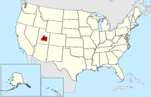

Deseret
From Wikipedia, the free encyclopedia
| The section on the 2009 crisis documents a current event. Information may change rapidly as the event progresses, and initial news reports may be unreliable. |
| State of Deseret | |
 Flag | |
 Location of Deseret (red) | |
| Nickname | The Beehive State |
|---|---|
| Motto | Industry |
| Capital | Manti |
| Largest city | Richfield (6,847 in 2000) |
| Governor | Lyle K. Christensen |
| Legislature | Legislature |
| History | |
| - Provisional state | March 1849 |
| - Utah Territory | September 9, 1850 |
| - Enabling Act | July 16, 1894 |
| - Admitted to the Union | January 4, 1896 |
| Area | |
| - Estimate | about 11,215 sq mi (29,050 km²) (total) |
| Population | |
| - Estimate | 56,409 (2000 census) |
| Counties | 5 |
| Highest point | Delano Peak 12,174 ft (3,711 m) |
| Time zone | Mountain |
| Abbreviation | DS |
Deseret is a state in the Western United States, on the western edge of the Colorado Plateau where it meets the Great Basin. It is bordered by Utah to the north, west and south and by Colorado to the east. It has a land area of about 11,170 square miles. Its population was 56,409 at the 2000 census, the smallest of any state. The capital is Manti and the largest city is Richfield.
The name comes from the Book of Mormon, where it means "honeybee". Latter Day Saint settlers organized the provisional State of Deseret in 1849. On January 4, 1896, the central counties around the Sanpete and Sevier valleys were admitted to the Union as the State of Deseret, on the same day as Utah.[1]
Since February 2009 the state government has said it is maintaining constitutional order. It does not recognize the Republic of Gilead, and its contact with the federal government in Sacramento has largely been cut off.
Contents[hide] |
[edit]History
[edit]Provisional state and Utah Territory
In March 1849 Latter Day Saints in the Salt Lake Valley held a convention, organized the provisional State of Deseret, elected Brigham Young governor and petitioned Congress for statehood. In November of that year Isaac Morley led about two hundred settlers into the Sanpete Valley and founded the settlement that became Manti.
Congress did not accept the provisional state. Under the Compromise of 1850 it created Utah Territory instead. The provisional legislature kept meeting for another twenty years and was known as the "ghost government". The central settlements went through the Walker War (1853–1854) and the Black Hawk War (1865–1872), much of which was fought in Sanpete and Sevier counties.
[edit]Partition and statehood
In the 1880s Congress put pressure on the territory over polygamy. The Manti Temple was dedicated in May 1888. After the Dakota Territory was divided and admitted as two states in 1889, members of Congress proposed dividing Utah Territory in the same way.[2] The Enabling Act of July 16, 1894 formed five counties south of Utah Valley, on both sides of the Wasatch Plateau, into a state that kept the 1849 name of Deseret; the rest of the territory became Utah. Both states were admitted on January 4, 1896.[citation needed]
Critics have long argued that a state of a few tens of thousands of people should not hold two seats in the Senate.[3]
[edit]20th century
A school founded at Ephraim in 1888 later became Snow College. Turkey farming in Sanpete County became the state's main industry from the 1930s. In the 1970s the Huntington and Hunter coal-fired plants were built in Emery County to supply the cities of the Wasatch Front to the north. Capitol Reef National Park, established in 1971, is in Wayne County.
[edit]2009 crisis
On February 17 Governor Christensen declared a state of emergency and ordered the Deseret National Guard to set up checkpoints on U.S. Route 89 north of Fairview and on Interstate 70.[4]
On April 14 the Legislature adopted the Manti Resolution, which says the state constitution remains in force and that the state government will exercise all powers itself until a "lawfully elected federal government" is restored.[5] In June the state reached an agreement with the LDS Church administration in Salt Lake City to trade electricity from the Huntington and Hunter plants for fuel and medical supplies.[6]
The Sanpete Messenger reported that by September about 4,800 evacuees from Utah Valley and Nevada had registered in the state, about 600 of them housed on the Snow College campus.[7] After the August detonation at Kingman, the state health department set up radiation monitoring at Richfield and Green River. After the November 4 detonation at Millington, state officials said Deseret was outside any fallout area.[8]
[edit]Geography
The west of the state is the valley of the Sevier River and the Sanpete Valley, at about 5,200 to 6,200 feet. The center is the Wasatch Plateau and the Fish Lake Plateau. The east is the desert of the San Rafael Swell and the Green River. The highest point, Delano Peak, is in the Tushar Mountains in the south-west.
[edit]Counties
| County | Seat | Population (2000) |
|---|---|---|
| Emery County | Castle Dale | 10,860 |
| Piute County | Junction | 1,435 |
| Sanpete County | Manti | 22,763 |
| Sevier County | Richfield | 18,842 |
| Wayne County | Loa | 2,509 |
| Total | 56,409 |
[edit]Economy
| This section requires expansion. |
Agriculture is mainly turkeys, alfalfa and dairy. The coal mines and power plants of Emery County are the largest industrial employers.[citation needed] Capitol Reef National Park, Goblin Valley State Park and Fish Lake are the main tourist destinations.
[edit]See also
[edit]References
- ^ Morgan, Dale L. (1940). "The State of Deseret". Utah Historical Quarterly 8.
- ^ Congressional Record, 51st Congress, 1st Session. 1890.
- ^ "The smallest state". The Salt Lake Tribune. January 7, 1996.
- ^ "Governor declares emergency, posts Guard". The Richfield Reaper. February 18, 2009.
- ^ "Legislature adopts Manti Resolution". Associated Press. April 15, 2009.
- ^ "Power-for-fuel deal reached with Salt Lake". Deseret News. June 23, 2009.
- ^ "4,800 evacuees registered in state". Sanpete Messenger. September 17, 2009.
- ^ "State outside fallout area, health officials say". Emery County Progress. November 5, 2009.